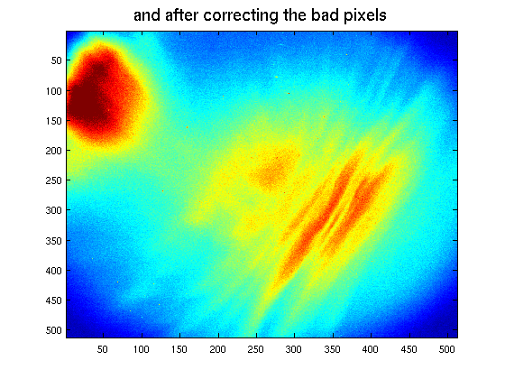

Loading and pre-processing of ALIS data
Contents
- Typical steps in reading ALIS images
- Raw image reading
- For fits files with LE byte order: fits1
- ...and for files in BE byte order: fits2
- Standard ALIS data reading
- ALIS image pecularities
- Overscan strips
- Bad-border
- "Bad-pixels"
- Pre-processing
- Quadrant balancing
- Adjusting the image borders
- Correcting bad pixels
- All in one go.
Typical steps in reading ALIS images
Lets look at a typical image. First move to a data directory.
cd /alis/stdnames/1997/02/16/20/ q = dir('*N.fits'); filename = q(14).name;
Raw image reading
There are 2 functions for raw reading of images in fits format. (except the later 'fitsread' provided by mathworks, which is slower...)
For fits files with LE byte order: fits1
[h,d] = fits1(filename); imagesc(d) title('image opened assuming wrong byte order','fontsize',16)

...and for files in BE byte order: fits2
[h,d] = fits2(filename); imagesc(d) title('...and with the correct guess','fontsize',16) caxis([-25066 -23866])

Standard ALIS data reading
There is a function that automatically chooses the right version: inimg. inimg also extracts the image header and even produces a structure with the relevant information more easily accesible
[d,h,o] = inimg(filename); o = o
o =
time: [1997 2 16 20 11 0]
pos: [19.0034 67.8518]
station: 6
alpha: []
beta: []
az: 0
ze: 0
camnr: 1
exptime: 2
filter: 0
cmtr: [3x3 double]
le_or_be: 'BE'
optpar: [-0.7127 0.7105 14.1872 9.3949 125.2752 -0.0120 -0.0269 -0.0108 3 0]
ALIS image pecularities
Lets go trough the list of pecularities:
Overscan strips
The CCD have a few columns on each edge thatis light insensitive - to correct for the drift in bias level
axis([433 565 372 520]) title('The left and right-most ~50 unbinned pixels are OS','fontsize',16)

Bad-border
The top and bottom lines are way off-set
plot(d(1:4,:)')

"Bad-pixels"
As in all CCDs there are a few bad pixels. That is they are either black, white, cold or hot.
imagesc(d) caxis([-24566 -23866]) axis([149 397 226 421])

Pre-processing
The normal way of reading ALIS data is to automatically do the necessary pre-processing steps, and possibly additional filtering. First get a default options struct
PO = typical_pre_proc_ops
% And change or set the parameters to accomodate the needs and whishes.
PO =
quadfix: 2
quadfixsize: 0
replaceborder: 1
badpixfix: 1
outimgsize: 0
medianfilter: 3
defaultccd6: 1
bias_correction: 1
imreg: []
C_cam: []
remove_these_stars: []
optpar: []
size_r_t_s: 2
v_interf_notches: []
psf: []
ffc: []
fix_missalign: 1
verb: 0
interference_level: Inf
interference_method: 'flat'
interference_swf: 3
img_histeq: 0
hist_crop: 0
try_to_be_smart_fnc: ''
find_optpar: 1
Quadrant balancing
d = quadfix3(d,2,abs(diff(size(d)))/2); d = removerscanstrip(d,2,abs(diff(size(d)))/2); imagesc(d),caxis([-25066 -23866]+25066) title('Image after quadrant balancing','fontsize',16)

Adjusting the image borders
d = replace_border(d); imagesc(d),caxis([-25066 -23866]+25066) title('and after correcting the border lines','fontsize',16)

Correcting bad pixels
There is almost always good to correct the bad pixels
load ccd1/badpix.dat bp_tbl = badpix; bpm = sparse(ceil(bp_tbl(:,2)/(1024/size(d,1))), ... ceil(bp_tbl(:,1)/(1024/size(d,2))), ... ones(size(bp_tbl(:,1))), ... size(d,1),size(d,2)); bpm = spones(bpm); d = bad_pixel_fix(d,bpm); imagesc(d),caxis([-25066 -23866]+25066) title('and after correcting the bad pixels','fontsize',16)
All in one go.
[d,h,o] = inimg(filename,PO); imagesc(d),caxis([-25066 -23866]+25066) title('After typical preprocessing','fontsize',16)